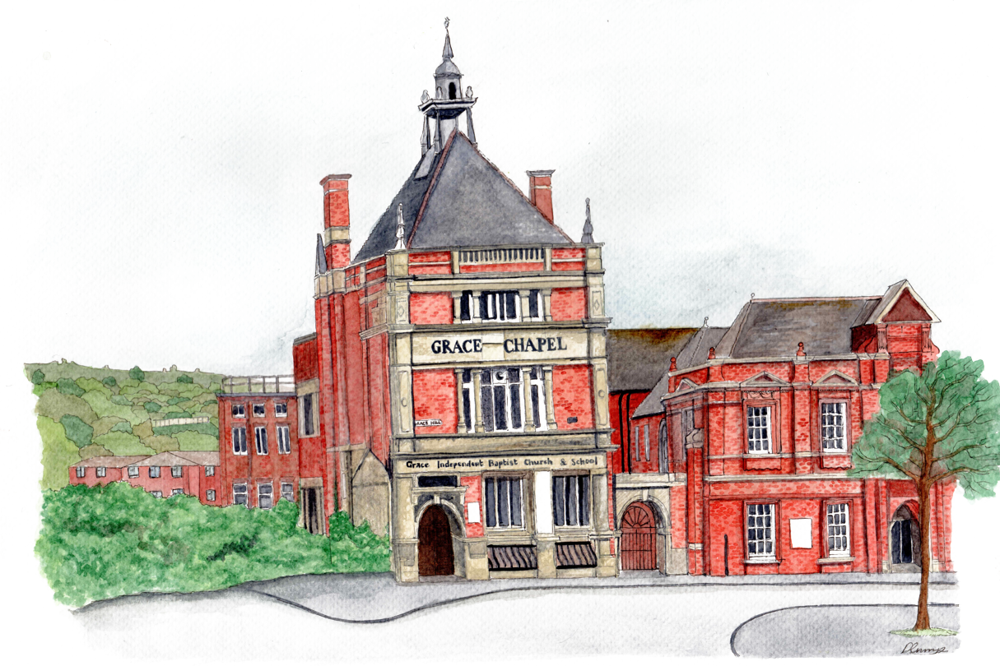

Teaching Service
A service centred on the teaching of God’s Word.
PREACHING CHRIST IN FOLKESTONE
We are a Reformed Baptist church committed to the faithful preaching of the Gospel, the authority of Scripture, and the glory of God.
“We preach Christ crucified…”
1 CORINTHIANS 1:23

Christ-centred preaching from God’s Word
Sunday worship at 11 am and 4 pm
Discover our Baptist heritage
Find us on Grace Hill
JOIN US THIS SUNDAY
We meet for worship each Sunday at Grace Chapel on Grace Hill, Folkestone.
A service centred on the teaching of God’s Word.
A service with a particular emphasis on the Gospel of Jesus Christ.
OUR STORY
The history of Baptist gatherings in Folkestone stretches back to the 1640s. The Particular Baptist congregation from which Grace Chapel traces its history began in 1728.
Explore our history →SERMONS
Watch and listen through the Good News for Folkestone YouTube channel.
Browse recordings by passage and preacher in our new sermon library.
WHERE TO FIND US
We would be delighted to welcome you.
Grace Chapel
Grace Hill
Folkestone, Kent
Sunday Teaching Service — 11:00 am
Sunday Gospel Service — 4:00 pm